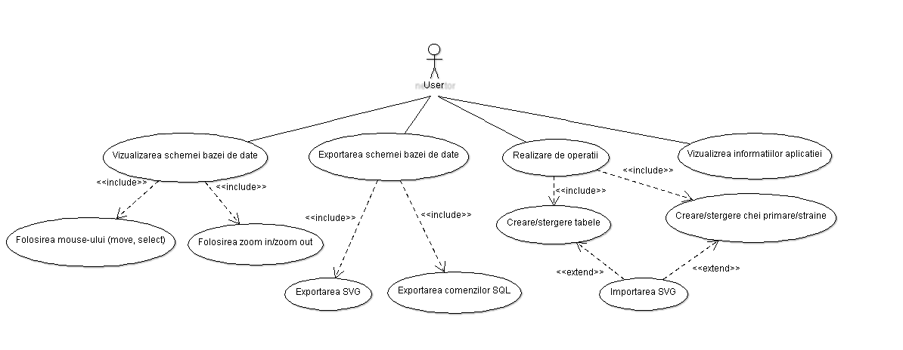

DASER
Editor schema baza de date
Autori
- Madalina Jitaru Student @Faculty of computer science
- Marian Alexandru Daniel Student @Faculty of computer science
- Alexandru Bodnar Student @Faculty of computer science
Cuprins
- Descrierea aplicatiei web
- Tehnologii utilizate
- User stories
- Actorii si scenariile de utilizare
-
Diagrame:
- Arhitecturala
- Use case
- De activitate
Afiliatii
- Facultatea de Informatica, "Alexandru Ioan Cuza" Universitatea din Iași
1. Descrierea aplicatiei web
Proiectul consta intr-o aplicatie Web care permite, la nivel de client, construirea interactiva a schemei unei baze de date relationale, inclusiv generand comenzile SQL aferente – pe baza unei abordari modulare (i.e. extensii proprii), se vor lua in consideratie multiple sisteme de gestiune a bazelor de date relationale. Reciproc, preluam local sau de la o distanta o lista de comenzi SQL pentru crearea unei bazei de date, se va genera reprezetarea grafica a schemei acesteia, inclusiv legaturile dintre tabele, chei primare/straine, constrangeri de unicitate etc. Reprezentarea grafica a schemei va putea fi exportata in formatul SVG.
2. Tehnologii utilizate
HTML
-
HyperText Markup Language (HTML) este un limbaj de marcare utilizat pentru crearea paginilor web ce pot fi afișate într-un browser (sau navigator). Scopul HTML este mai degrabă prezentarea informațiilor – paragrafe, fonturi, tabele ș.a.m.d. – decât descrierea semanticii documentului.
CSS
-
CSS (Cascading Style Sheets) este un standard pentru formatarea elementelor unui document HTML. Stilurile se pot atașa elementelor HTML prin intermediul unor fișiere externe sau în cadrul documentului, prin elementul 'style' și/sau atributul style. CSS se poate utiliza și pentru formatarea elementelor XHTML, XML și SVGL.
JavaScript
-
Java Script JavaScript este un limbaj de programare care permite utilizatorilor să implementeze concepte ample pe paginile web, realizand lucruri complexe pentru utilizatorul site-ului pe care acesta le poate viziona, afișând actualizări de conținut în timp util sau hărți interactive, grafice anímate 2D/3D si multe altele. Am ales sa folosim javascript pentru crearea/stergerea dinamica a tabelelor, relatiilor dintre ele, afisarea/ascunderea popup-urilor, precum si la manipularea tabelelor si a schemei unei baze de date de catre utilizator. De asemenea vom utiliza javascript atat pentru exportarea in format SVG cat si pentru exportarea comenzilor SQL aferente crearii schemei unei baze de date. Javascript este usor de invatat, un sunt necesare configurari, este construit in browserul web. Asadar l-am ales pentru simplitatea lui in utilizare, cat si pentru manipularea cu usurinta a elementelor html, si editarea stilizarii paginii prin utilizarea metodelor de editare/adaugare a elementelor DOM (document object model).
3. User stories
Ca utilizator uman, pot efectua diferite operatii pentru o vizualizare buna a bazei mele de date, precum: crearea/stergea tabele necesare, crearea/stergerea cheilor primare/straine (prin aceesarea butoanelor sau scrierea comenzilor SQL). Ca utilizator uman, pot avea o baza de date mare si pentru a putea lucra mai usor pe ea, de exemplu pentru mici modificari pot face zoom in si zoom out prin folosirea mouse-wheel-ului, dar de asemenea pot muta atat tabele cat si schema bazei de date tot prin folosirea mouse-ului. Ca utilizator uman, pot importa comenzile SQL in urma caruia va fi creata schema bazei de date. Ca utilizator uman, pot realiza doua tipuri de export: export ca si SVG dar si export comenzilor SQL. Ca utilizator uman, pot vizualiza informatiile despre folosirea aplicatiei.
4. Actorii si scenariile de utilizare
- Actori:
- Aplicatia
- Utilizatorul uman
- Scenarii de utilizare
-
Crearea sau stergerea tabelelor si a relatiilor dintre ele:
- Accesarea paginii aplicatiei.
- Accesarea butonului de “create table”, prin scrierea comenzilor SQL in input text sau prin aceesarea butonului “Import SQL”.
- Daca utilizatorul a creat tabelul va accesa butonul de “create foreign key” pentru realizarea cheilor straine/primare.
- Daca utilizatorul a creat un tabel gresit il poate sterge prin accesarea butonului “delete”.
-
Vizualizarea schemei bazei de date:
- Accesarea paginii aplicatiei.
- Userul poate vizualiza schema bazei de date prin accesarea butonului “move”.
- Userul poate de asemenea naviga prin schema bazei de date prin zoom in si zoom out folosint mouse-wheel-ului.
-
Export schema bazei de date ca si SVG:
- Accesarea paginii aplicatiei.
- Realizarea schemei bazei de date.
- Accesarea butonului “Export as SVG”.
-
Export fisier cu comenzi SQL:
- Accesarea paginii aplicatiei.
- Realizarea schemei bazei de date.
- Accesarea butonului “Export SQL commands”.
-
Vizualizarea informatiilor despre aplicatie:
- Accesarea paginii aplicatiei.
- Accesarea butonului “info”.
5. Diagrame
a. Arhitecturala

Aplicatia este la nivel de client, impartita in urmatoarele module(toate utilizand javascript):
-> Modul pentru crearea/instatierea in pagina a tabelelor SVG:
Modul pentru crearea/instantierea in pagina a relatiilor dintre tabele:
-> Modul pentru stergerea tabelelor/relatiilor dintre tabele:
-> Modul pentru a simula actiunile utilizatorului asupra Schemei de baza de date:
-> Modul pentru a exporta in format SVG:
-> Modul pentru a exporta comenzile SQL:
-> Modul pentru a face toggle ferestrelor de creare/stergere/informare:
-> Modul pentru importarea comenzilor SQL aferente crearii unei scheme de baza de date:
b. Use-case
User:
- Un user dupa ce a accesat pagina aplicatiei poate crea tabele sau chei primare/straine fie prin folosirea butonului de “create table”fie prin importarea SVG. De asemenea poate crea si prin utilizarea input text-ului unde poate scrie comenzi SQL.
- Dupa ce a creat tabele, poate sa stearga tot prin aceleasi metode (comenzi SQL, import SQL sau prin butonul de “delete”).
- Un user poate sa exporte schema bazei de date fie prin export SVG, fie prin export SQL commands.
- Un user poate sa navigheze prin schema bazei de date prin mai multe metode, acelea fiind: move – prin click (poate sa mute atat un tabel cat si intreaga schema bazei de date), select – prin click (selecteaza un tabel sau relatiile dintre tabele), zoom-in/zoom-out - prin mouse-wheel (poate sa micsoreze sau sa mareasca intreaga schema a bazei de date).
- Si nu in ultimul rand, un user poate vizualiza informatiile despre utilizarea aplicatiei prin folosirea butonului “info” .
b. Diagrama de activitate

In aceasta diagrama se pot observa activitatile pe care utilizatorul le poate face pe aplicatia Daser. Comenzile utilizatorului sunt de doua tipuri, prin comenzi de tip text el poate crea tabele sau relatii intre acestea, de asemenea le poate sterge. Utilizatorul poate face aceste actiuni si cu ajutorul unor butoane, si prin completarea unor informatii in diferite meniuri. Aceasta aplicatie ii ofera utilizatorului si o fereastra de informare la care acesta poate ajunge printr-un singur click pe butonul de info, posibilitatea de a exporta in formatul SVG schema de baza de date creata, cat si exportarea comenzilor SQL intr-un fisier local pentru a putea recrea baza de date fizic. Utilizatorul poate importa fisiere text cu comenzi SQL ce creaza tabele si relatii intre ele.